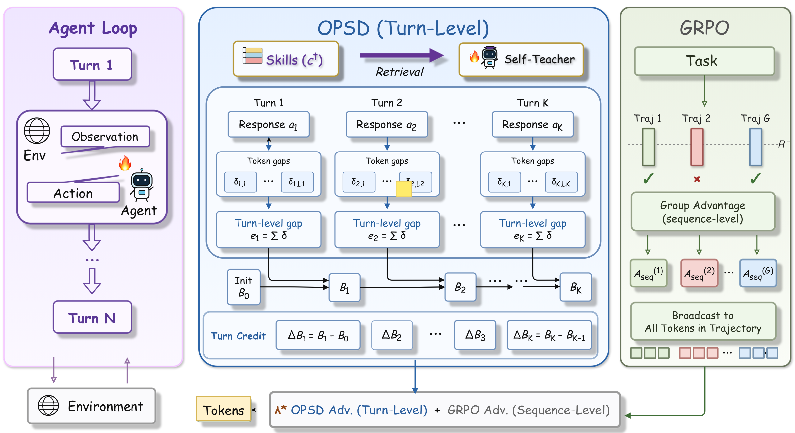
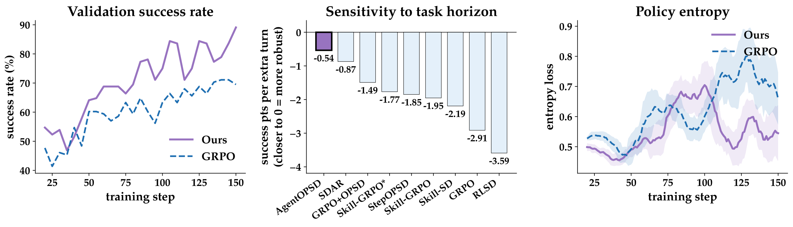
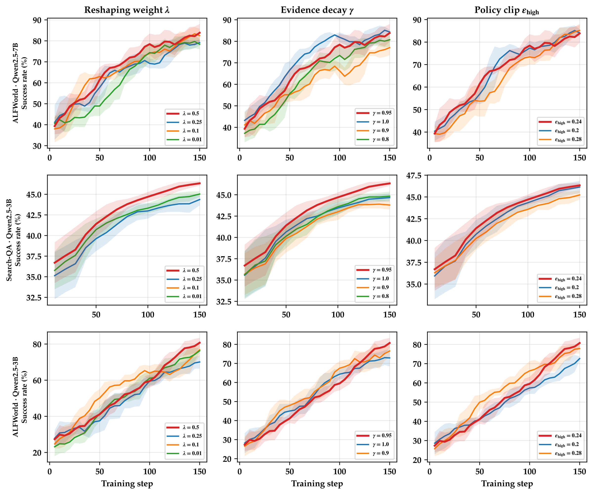

GRPO · Aseq
回答“整件事做得好不好”；方向可靠，但轨迹内部没有区分度。
AgentOPSD: Recursive Self-Distillation for Agentic Reinforcement LearningZi-Han Wang、Zhengxi Lu、Zhiyuan Yao、Jinyang Wu、Jie Wu、Zhengzhou Cai、Yueqing Sun、Ziang Ye、Linji Hao、Qi Gu、Xunliang Cai、Yongliang Shen、Yujiu Yang · 清华大学 / 浙江大学 / 美团 · 2026-08-06
AgentOPSD 研究如何把一条轨迹的最终奖励，更合理地分配到中间各轮交互。它在训练时利用额外的技能提示，判断每一轮对成功的支持是增强还是减弱，从而缓解长轨迹中“所有步骤得到同样评价”的问题。
AgentOPSD 没有重新设计强化学习算法，而是改进 GRPO 的奖励分配方式。普通 GRPO 往往让一整条轨迹中的所有 Token 共享同一个优势值；AgentOPSD 则进一步判断每一轮交互对最终结果有多大帮助，再调整该轮的训练权重。
在 ALFWorld、WebShop 或搜索问答里，Agent 要根据环境反馈连续行动。成功轨迹中可能混入冗余操作，失败轨迹也可能包含正确的局部判断。若把最终的成功或失败均匀广播到整条轨迹，训练会把“打开关键容器”和“重复查看房间”当作同等重要；轨迹越长，这种信用稀释越严重。
已有自蒸馏方法提供了更密集的教师—学生概率差：同一个模型一支只看标准历史，另一支额外看到训练期的任务技能，再比较它们对学生实际动作的概率。问题在于，token 级或单回合的局部差异仍不是序列信用。同样大小的差异，在结果尚不确定时可能改变局势，在成功已几乎确定时却只是重复证据。
从理解粒度看，这篇论文连接了三层信息：GRPO 给出整条轨迹的可靠方向，OPSD 提供 token 级局部证据，AgentOPSD 再把这些证据聚合到环境真正发生状态转移的回合。三层回答的是不同问题，不能把细粒度自动等同于更正确的信用。
回答“整件事做得好不好”；方向可靠，但轨迹内部没有区分度。
回答“这个 token 是否更像技能指导下的行为”；密集，却过细且局部。
回答“这个完整 action 在已有历史下改变了多少成功支持”。
不要把上面误读成三套算法顺次训练：实际是两路信号汇合——GRPO 产生轨迹优势，特权自教师产生 token evidence；后者经 turn 聚合与递归 belief 变成权重，再去重塑前者，最终仍执行 GRPO update。
GRPO 决定整条轨迹是奖励还是惩罚；AgentOPSD 决定这份奖励或惩罚在不同回合之间如何分配强弱。
把品牌名拿掉，这是一种“用训练期特权信息构造序列证据，再用终局验证器约束方向”的信用塑形方法。下面四层贡献必须分开看，否则容易把一个有效的工程机制误读为已经校准的因果信用估计器。
与相邻方法的真正分界，不在于“是否用了自蒸馏”，而在于信号来源、信用粒度和是否条件于历史。尤其值得注意的是，最邻近的 StepOPSD 已经做到回合聚合；AgentOPSD 新增的是递归状态，而不是第一次提出回合级信号。
| 方法 | 信息来源 | 信用粒度 | 是否依赖历史 | 代价 / 关键差别 |
|---|---|---|---|---|
| GRPO | 终局奖励 | 整条轨迹统一 | 否 | 无需 critic，但无法区分回合 |
| RLSD | 教师—学生概率差 + 终局奖励 | token 局部缩放 | 否 | 密集但仍是局部信号 |
| StepOPSD | 教师—学生概率差 | 回合 | 否 | 与环境边界对齐，但每回合独立评分 |
| AgentOPSD | 特权技能差异 + 终局验证器 | 回合 | 是 | 递归 belief revision；一次额外教师前向 |
| GiGPO（未实测对比） | 跨轨迹重复 anchor state 的环境奖励 | step | 间接 | 信号源不同；是论文未纳入主表的重要反事实 |
来源：论文 Introduction、Related Work、Appendix “Baseline Details”。“GiGPO 未实测对比”的判断来自主结果表缺少该方法，属于编辑性比较。
方法先把一个回合的 token 概率差相加，得到动作级证据；再把证据递归写入一个有界状态。关键不是状态名叫 belief，而是它让同一份新证据的作用取决于此前已经积累了多少支持。 以下按总体流程、关键机制与实现约束说明技术路线。
对第 k 个回合，学生分支只看到当前交互历史，教师分支还看到从 SkillRL 的 SkillBank 检索出的训练期技能。两支共享参数，并对学生已经生成的同一动作评分。把每个 token 的对数概率差求和，便得到回合证据 eₖ：它衡量该动作在“技能条件分布”下是否比在普通策略下更典型。
c⁺ 是训练期检索技能。正的 eₖ 只说明技能条件使已生成动作更可能；它不是该动作对结果的反事实因果效应。
论文用贝叶斯规则解释这个比值：理想情况下，应该比较动作在“最终成功”与“最终失败”条件下的似然；现实中没有这两个分布，于是用技能条件分支近似成功行为、用普通策略近似背景分布。这个替换让不可计算的 Bayes factor 变成一次可计算的自教师对比，但也把技能质量引入了识别假设。
有了 eₖ 后，AgentOPSD 不直接拿它做信用，而是从同一任务的 GRPO 组成功率 B₀ 出发，在 log-odds 空间累积折扣证据。状态对极端区域不敏感、在 0.5 附近最敏感：当此前证据已经把成功支持推到接近 0 或 1，同样的局部差异造成的边际修正会更小。
论文主设置 γ=0.95。Bₖ 被作者明确描述为“相对支持”而非校准后的成功概率；真正用于信用的是相邻状态之差 ΔBₖ。
一个具体例子能看出 eₖ 与 ΔBₖ 的差别。下面数值只是机制示意，不是论文实验记录：关键发现与重复确认都可能“看起来正确”，但前者在不确定阶段真正改变了局势，后者到来时成功支持已经接近饱和。
| 回合 | 动作含义 | 局部证据 eₖ | 支持状态变化 | 边际修正 ΔBₖ |
|---|---|---|---|---|
| Turn 1 | 普通搜索 | +0.1 | 0.20 → 0.23 | +0.03 |
| Turn 2 | 找到关键线索 | +2.0 | 0.23 → 0.70 | +0.47 |
| Turn 3 | 再次确认 | +1.8 | 0.70 → 0.87 | +0.17 |
| Turn 4 | 错误操作 | −1.0 | 0.87 → 0.72 | −0.15 |
最值得带走的区别：e₂ 与 e₃ 都很高，说明两个动作都像“正确行为”；但 ΔB₂ 远大于 ΔB₃，说明关键线索首次出现时贡献更大。论文真正新增的不是 turn 内求和，而是把“当前行为看起来有多好”改写成“当前行为在已有历史上改变了多少局势”。

左侧是多轮 Agent 与环境交互；中间把每回合 token 差异聚合成 eₖ，再递归得到 Bₖ 与 ΔBₖ；右侧对照 GRPO 把同一序列优势广播给所有 token。
阅读要点：图中“OPSD Adv.”容易让人以为新增了独立蒸馏目标，实际训练目标没有额外 distillation loss；自教师信号只用于重塑原有 GRPO 优势的大小。
AgentOPSD 不是替换 GRPO，而是对 GRPO 做 turn-level credit reshaping。它最保守也最重要的设计，是不让自教师翻转终局验证器的方向：belief revision 被压进严格为正的乘子，因此只能改变各回合更新的强弱。
先用序列优势的符号对 ΔBₖ 定向：成功轨迹里上升的支持得到正信用，失败轨迹里下降的支持才与终局结果一致。随后在每条轨迹内部标准化信用，用区间 [1−b, 1+b] 内的乘子调节原优势。主设置 b=0.2、λ=0.5，因此每回合优势相对 GRPO 的幅度变化被限制在 ±10%，符号不会翻转。
有界性：|Ãₖ−Aseq| ≤ λb|Aseq|；当 λ=0 时严格退化为 GRPO。论文证明的是有界、保号和可退化，不是无偏性或因果正确性。
这意味着成功轨迹里即使夹着明显错误，AgentOPSD 通常也只是让它“少得奖励”，不会让它变成负优势。以下用主设置允许的 ±10% 幅度做一个数值示意，帮助区分“重权重”与“完整信用翻转”。
| 回合 | 行为 | GRPO Aseq | AgentOPSD 重塑后 | 含义 |
|---|---|---|---|---|
| T1 | 正确准备 | +0.80 | +0.82 | 略增强 |
| T2 | 关键发现 | +0.80 | +0.88 | 强增强 |
| T3 | 明显错误 | +0.80 | +0.72 | 削弱，但不翻成负值 |
| T4 | 修复错误 | +0.80 | +0.88 | 强增强 |
| T5 | 完成任务 | +0.80 | +0.80 | 接近平均 |
准确命名：它是 turn-level credit reshaping，而不是完整的 causal / counterfactual credit assignment。保号让训练更稳定、保留验证器权威，同时也限制了它惩罚成功轨迹内部错误动作的能力。
从实现角度看，流程仍是标准 group-relative policy update，只增加一次特权教师重评分与逐回合的轻量状态计算。各环节对应不同失败模式：聚合解决 token 与环境边界错位，递归解决局部信号忽略历史，定向解决“变化大但方向错”，先验则提供任务难度锚点。
这四个组件在 ALFWorld / Qwen2.5-7B 的单点消融中都贡献了性能，但幅度并不相同。尤其是去掉先验锚点和信用方向造成的损失最大，说明结果不仅依赖“历史递归”，还高度依赖终局信号如何进入塑形。
| 设置 | 改变了什么 | 成功率 ↑ | 相对完整方法 |
|---|---|---|---|
| AgentOPSD 完整版 | 回合级、有界重塑、λ=0.5 | 89.1 | — |
| token 级累积 | 不在环境回合边界聚合 | 85.9 | −3.2 |
| 原始局部 gap | 用 eₖ 替代 ΔBₖ | 82.8 | −6.3 |
| 只保留修正幅度 | 丢弃 outcome-aligned 符号 | 80.5 | −8.6 |
| 移除 B₀ 锚点 | 不以组成功率初始化 | 78.9 | −10.2 |
证据能支持什么：这些单因素替换支持各组件对最终效果有贡献，并表明“原始局部 gap”不如递归修正。它们尚不能单独证明 sigmoid belief 的贝叶斯解释就是增益来源，因为论文没有把它与更简单的累计 gap、指数滑动平均或非概率化门控做完全对齐的对照。
来源：论文 Table 2 与 Section 4.3。差值为按表中数值计算的绝对百分点。
在 3B 与 7B、三个环境的八个聚合指标上，AgentOPSD 全部优于普通 GRPO；若改与每列最强的其他方法比较，领先幅度在 7B 上明显缩小，WebShop 的精确成功率还落后 3.1 点。最准确的结论是稳定有效，而非全面支配。 以下先说明评测设置，再结合主结果、消融与边界判断证据强度。
评测覆盖文本具身任务 ALFWorld、七个数据集组成的 Search-QA，以及 128 个固定验证任务的 WebShop。所有后训练方法使用相同 backbone、数据与 150-step 训练预算；AgentOPSD 的技能只在训练时进入教师分支，推理不使用外部技能。Search-QA 中 NQ 与 HotpotQA 是域内数据，其余五个数据集留出。
下面同时列出 GRPO 与“该指标上最强的非 AgentOPSD 方法”，避免只用较弱基线放大结论。3B 下 AgentOPSD 在四项指标上领先或并列最强；7B 下，它在 ALFWorld、Search-QA 和 WebShop Score 只比最强替代方案高 0.2–0.8 点，在 WebShop Acc 则不及 SDAR。
| 模型 | 环境 / 指标 | GRPO | 最强其他方法 | AgentOPSD | 谨慎解读 |
|---|---|---|---|---|---|
| 3B | ALFWorld Success | 75.0 | SDAR 84.4 | 84.4 | 并列最优；较 GRPO +9.4 |
| 3B | Search-QA Accuracy | 36.4 | GRPO+OPSD 44.6 | 46.7 | 较最强其他方法 +2.1 |
| 3B | WebShop Score | 79.8 | SDAR 85.0 | 90.4 | 较最强其他方法 +5.4 |
| 3B | WebShop Acc | 63.3 | SDAR 68.0 | 69.5 | 较最强其他方法 +1.5 |
| 7B | ALFWorld Success | 81.2 | StepOPSD 88.4 | 89.1 | 较最强其他方法 +0.7 |
| 7B | Search-QA Accuracy | 42.0 | RLSD / SDAR 49.0 | 49.2 | 较最强其他方法 +0.2 |
| 7B | WebShop Score | 80.9 | SDAR 89.4 | 90.2 | 较最强其他方法 +0.8 |
| 7B | WebShop Acc | 72.6 | SDAR 82.8 | 79.7 | 低于最强其他方法 3.1 |
来源：论文 Table 1。最强其他方法包含表中所有非 AgentOPSD 行，包括带推理期技能的 Skill-GRPO*；本表对应列的最强者实际均为不带星号的方法。差值均为绝对百分点。
论文还给出一个更贴近动机的分析：在 ALFWorld 六类子任务上，用成功 episode 的平均回合数表征任务 horizon，再回归“每多一回合损失多少成功率”。AgentOPSD 的斜率为 −0.54 点/回合，GRPO 为 −2.91，RLSD 为 −3.59。这与“轨迹越长，统一信用越糟”的假设一致。

左图显示验证成功率随训练上升；中图比较不同方法的任务长度斜率，AgentOPSD 最平；右图展示策略熵动态。
谨慎解读：horizon 回归只有六个 ALFWorld 子任务，长度又按成功 episode 测量，任务类型与长度同时变化。因此它是有方向性的描述证据，不能单独证明递归信用因果上消除了长程退化。
超参数分析也与这个故事相符：塑形权重 λ 从 0.5 降低时，三个配置大多退化；证据衰减 γ 与 PPO 上界裁剪则相对不敏感。四回合上限的 Search-QA 中，各条曲线差距更小，提示方法主要在足够长、能够积累历史的轨迹中发挥作用。

三行依次为 ALFWorld 7B、Search-QA 3B 与 ALFWorld 3B；红线是主设置。长时程任务对 λ 的反应更清晰。
阅读要点：阴影是滚动曲线的局部 ±1 标准差，不应当当作多随机种子置信区间。主结果表也没有报告 run-to-run 方差，因此 0.2–0.8 点的小幅领先需要复现实验才能判断稳定性。
AgentOPSD 的工程结论比它的概率语义更稳固：用递归、保号、有界的回合重塑能改善训练；但把这种重塑解释成 Bayesian success belief，需要技能教师近似成功条件分布等额外假设。论文的关键下一步不是再加一个模块，而是验证这个代理何时可信。 以下区分概念贡献、方法价值、主要局限与后续验证方向。
去品牌后的本质是：在只有终局验证器的长程任务中，把“信用分配边界”从整条轨迹推进到回合；利用训练期特权上下文引起的动作似然变化作为证据，产出一个不改变全局方向的局部权重。它用一次教师前向和技能库依赖，换取更细的时间归因。
这个方法没有真正观测成功条件动作分布。附录给出两个关键近似：A1 假设技能条件分支接近成功条件行为；A2 假设成功率低时，普通策略的边际分布主要由失败行为构成。A1 单独成立时，eₖ 更接近点互信息式证据，能保持符号与排序；只有在更强的稀有成功极限下，才接近理想 Bayes factor。论文也明确不把 Bₖ 当作校准概率。
下面四项边界分别触及测量、因果、系统成本和外部有效性。它们不否定结果，但决定了论文可以从“有效的信用塑形”外推到多强的机制解释。
最强可信反事实：在相同 backbone、数据、技能和额外前向预算下，用一个简单的折扣累计 gap / EMA 门控，或用 GiGPO 式环境奖励信用，是否能达到同样效果？当前消融证明“递归版本优于原始局部 gap”，却尚未隔离“贝叶斯形式”相对一般历史平滑的独特价值。
因此，论文最耐久的贡献不是公式里出现了 Bayesian belief，而是提出了一条实用的设计原则：在稀疏终局奖励下，密集代理信号必须先对齐环境决策边界，再根据此前历史判断其边际新信息，最后让可信的终局验证器保留全局方向。即使未来换掉技能库、sigmoid 状态或 GRPO，这三个约束仍值得保留。
“局部质量不等于历史条件下的边际贡献”也不只适用于 RL 信用分配。只要系统需要从长轨迹中挑选、压缩或沉淀信息，同样应该问：新内容本身看起来有多好，和它在已有状态上新增了多少信息，是不是被混成了一个分数。
一句话结论：AgentOPSD 不重新发明 RL，而是在 GRPO 内用自蒸馏证据把轨迹级优势重塑为回合级权重；它有说服力地说明“局部正确性不等于序列重要性”，但尚未提供可翻转符号的反事实信用，也没有证明其 belief 是校准概率。最有价值的下一实验，是用真实 continuation 反事实检验 ΔBₖ 是否真的定位改变结果的回合。
主要来源：arXiv:2608.05987v1（2026-08-06），包括正文、附录、主结果表、组件消融与超参数图。本文未独立复现实验；“最强反事实”和结构性边界为基于论文证据的编辑性分析。
↑ 返回顶部